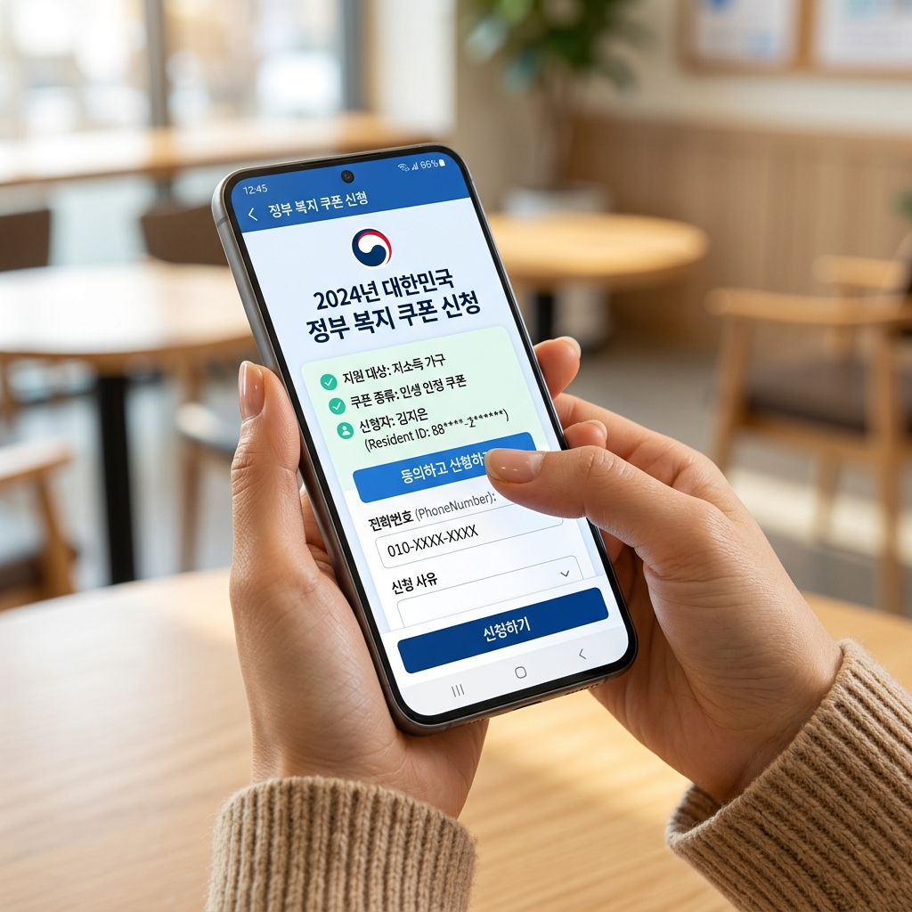
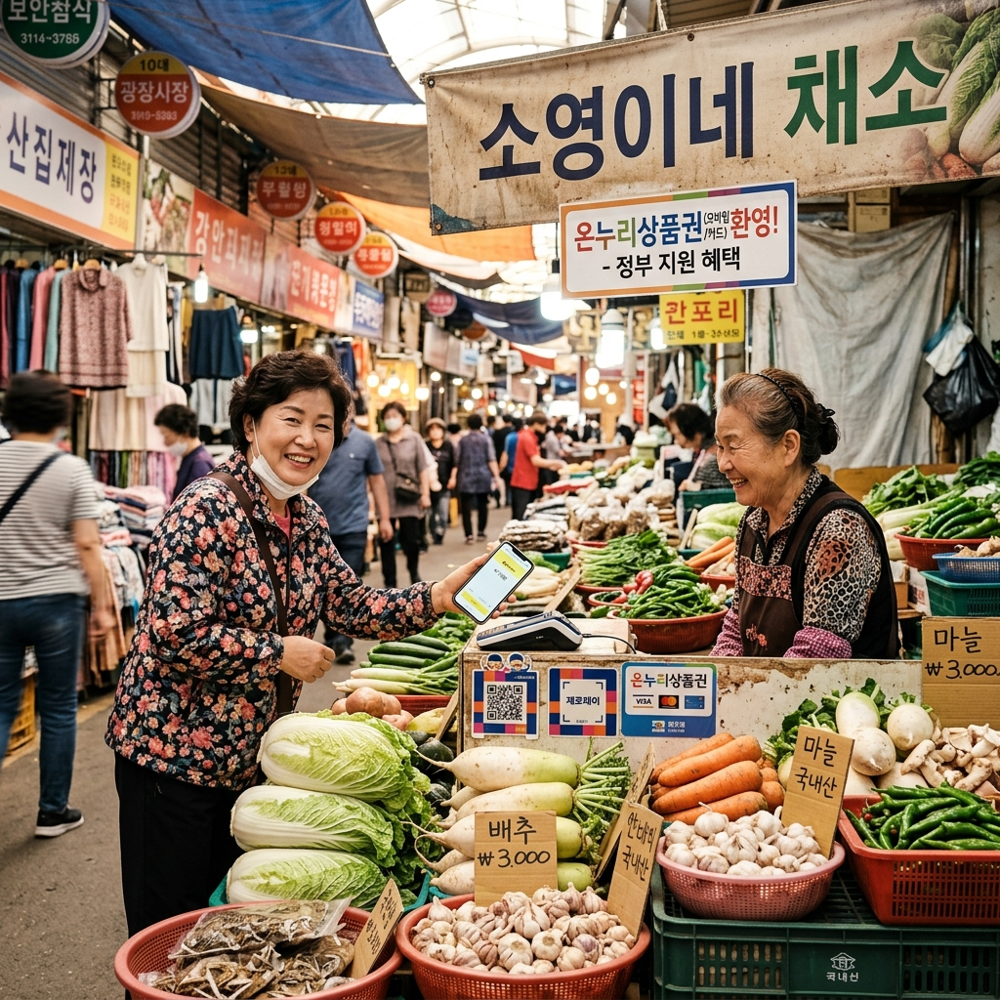
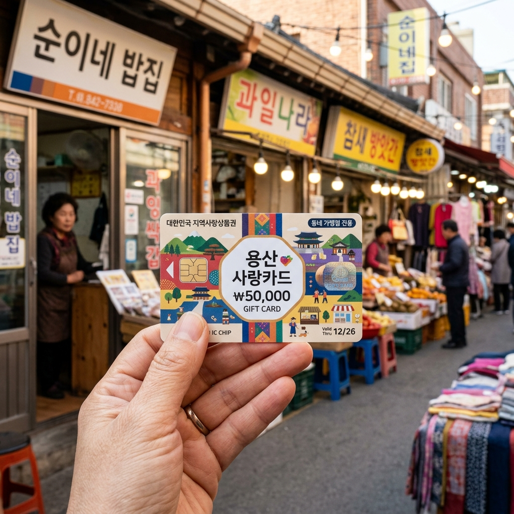

민생회복 소비쿠폰은 가계 소비를 지원하기 위해 정부가 소득 기준 이하 가구에 지급하는 지역 상권 소비 바우처입니다. 지역 내 소비를 촉진하고, 소상공인 매출을 지원하는 복합 목적을 가집니다.
행정안전부 발표에 따르면 지원 대상은 기준 중위소득 하위 70%(약 3,577만 명)이며, 지급 금액은 소득 구간에 따라 10만 원에서 최대 60만 원까지 차등 지급 방식입니다.
현금이 아닌 지역 가맹점에서만 사용 가능한 전자 바우처 또는 포인트 형태로 지급되며, 대형 온라인 쇼핑몰과 일부 업종에서는 사용이 제한됩니다.
지원 대상 여부는 소득 수준을 기준으로 하며, 가구원 수와 건강보험료 납부액을 기준으로 산정됩니다. 정확한 대상 여부는 정부24 또는 행정안전부 공식 안내를 통해 본인 인증 후 확인하는 것이 가장 정확합니다.
| 확인 경로 | 방법 |
|---|---|
| 정부24 | gov.kr → 민생회복 소비쿠폰 검색 → 본인 인증 후 대상 조회 |
| 행정안전부 공식 홈페이지 | mois.go.kr → 민생회복 지원 안내 페이지 |
| 읍·면·동 행정복지센터 | 방문 시 신분증 지참, 담당자 직접 확인 가능 |
| 전화 문의 | 복지로 콜센터 129, 행정안전부 민원콜 1741 |

Step 1. 신청 기간 확인
민생회복 소비쿠폰은 신청 기간이 정해져 있습니다. 행정안전부 공식 발표에서 정확한 신청 가능 기간을 확인하세요. 기간이 지난 후에는 신청이 불가합니다.
Step 2. 신청 채널 선택
온라인: 정부24(gov.kr) 또는 복지로(bokjiro.go.kr) 접속 → 본인 인증 → 신청서 작성
오프라인: 읍·면·동 행정복지센터 방문, 신분증 지참
Step 3. 본인 인증
공동인증서, 간편인증(카카오, PASS, 네이버 등) 중 하나로 로그인합니다. 가족 구성원 대신 신청하는 경우 위임장 또는 가족관계증명서가 필요할 수 있습니다.
Step 4. 수령 방법 선택
모바일 바우처, 카드 포인트 적립 등 지급 방식 중 선택합니다. 지급 방식은 정책에 따라 달라질 수 있습니다.
Step 5. 신청 완료 및 확인
신청 완료 후 카카오톡·문자 메시지 등으로 처리 결과 안내를 받을 수 있습니다. 처리까지 일정 기간(수일~수 주)이 소요될 수 있습니다.
사용 가능한 곳 (일반적인 기준)
• 지역 소상공인 가맹점 (음식점, 카페, 편의점, 마트 등)
• 지역 전통시장 가맹점
• 지역 농·수·축협 매장
• 지역화폐 가맹점
사용 제한 업종 (일반적인 기준)
• 대형 유통업체 (백화점, 대형마트)
• 온라인 쇼핑몰
• 유흥·사행성 업소
• 일부 프랜차이즈 대형 브랜드
※ 가맹점 범위는 지자체·지역화폐 종류에 따라 다를 수 있습니다. 정확한 사용 가능 가맹점 목록은 지급받은 바우처의 운영 앱 또는 해당 지자체 공지를 확인하세요.

행정안전부 발표에 따르면 소득 구간에 따라 지급 금액이 달라집니다. 소득이 낮을수록 더 많은 금액을 지원받을 수 있는 역진적 지원 구조입니다.
구체적인 소득 구간별 금액은 정부 공식 발표 문서에서 확인하시기 바랍니다. 행정안전부 홈페이지(mois.go.kr)와 정부24에서 지원 기준 가이드라인을 제공하고 있습니다.
전체 지원 대상: 기준 중위소득 하위 70% 수준 (약 3,577만 명), 지급 범위: 10만 원 ~ 최대 60만 원 차등
Q. 신청하지 않아도 자동으로 지급되나요?
A. 일반적으로 별도 신청이 필요합니다. 다만 정책에 따라 일부 수급자는 자동 지급될 수 있습니다. 공식 안내를 확인하세요.
Q. 유효기간이 있나요?
A. 있습니다. 지급일로부터 일정 기간 내에 사용해야 하며, 기간 초과 시 소멸합니다. 수령 후 유효기간을 반드시 확인하세요.
Q. 가족 구성원 각자 받을 수 있나요?
A. 가구 단위 또는 개인 단위 지급 여부는 정책에 따라 다릅니다. 공식 안내에서 가구원 지급 기준을 확인하세요.
Q. 기존 지역화폐와 함께 쓸 수 있나요?
A. 가맹점이 겹치는 경우 병행 사용이 가능하나, 동일 결제에 중복 적용 여부는 가맹점마다 다를 수 있습니다.
정부 지원금을 빙자한 보이스피싱과 스미싱이 지원 정책 발표 시마다 증가합니다. 다음 유형을 주의하세요.
① 문자·카카오톡 링크 유도: "민생쿠폰 신청하세요"라는 문자와 함께 출처 불명 링크가 오는 경우입니다. 정부 공식 사이트(gov.kr, mois.go.kr)가 아닌 다른 URL로 연결되는 링크는 클릭하지 마세요.
② 개인정보·금융 정보 요구: 공식 신청 과정에서 계좌 비밀번호, OTP, 보안카드 번호를 요구하는 경우는 없습니다. 이런 정보를 요구한다면 100% 사기입니다.
③ 사전 수수료 요구: 지원금 수령 전에 수수료를 내라는 안내는 공식 정부 정책에 존재하지 않습니다.
대상에서 제외되거나 지급 불가 통보를 받은 경우 이의 신청이 가능합니다. 행정복지센터 방문 또는 정부24를 통해 이의신청서를 제출할 수 있으며, 재심사 후 결과를 안내받습니다.
건강보험료 산정에 오류가 있는 경우, 국민건강보험공단(1577-1000)에 정정 신청 후 재산정된 금액으로 재신청할 수 있습니다.

정부 지원금 정책은 시행 과정에서 세부 내용이 바뀔 수 있습니다. 반드시 1차 출처에서 확인하시기 바랍니다.
공식 확인 채널:
• 행정안전부: mois.go.kr
• 정부24: gov.kr
• 복지로: bokjiro.go.kr
• 복지로 콜센터: 129
• 행정안전부 민원콜: 1741
• 읍·면·동 행정복지센터 (직접 방문)